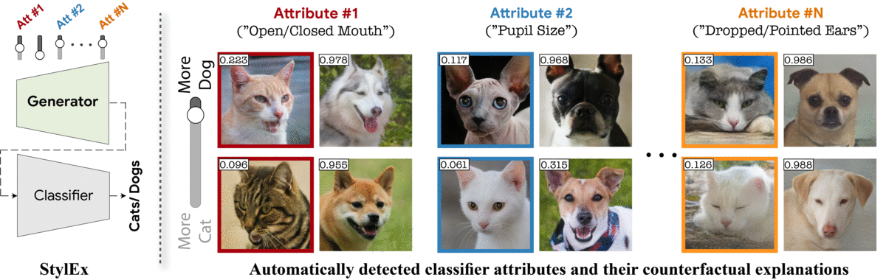
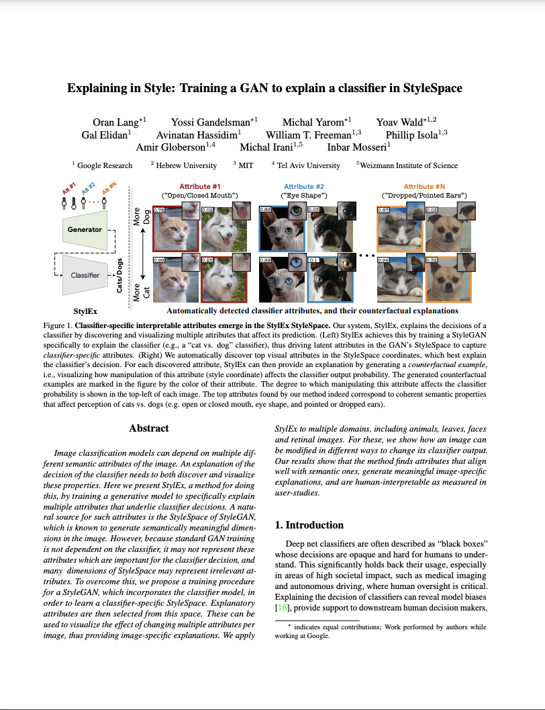
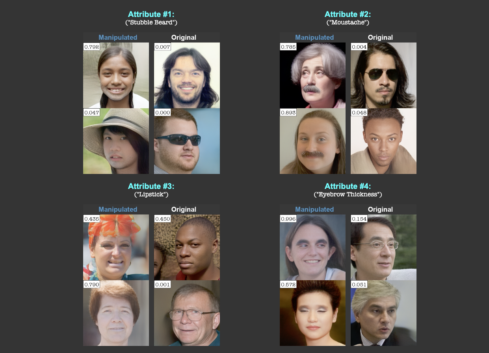

Explaining in Style: Training a GAN to explain a classifier in StyleSpace
* Equal contributors.
|  |
|
Abstract
Image classification models can depend on multiple different semantic attributes of the image. An explanation of the decision of the classifier needs to both discover and visualize these properties. Here we present StylEx, a method for doing this, by training a generative model to specifically explain multiple attributes that underlie classifier decisions. A natural source for such attributes is the StyleSpace of StyleGAN, which is known to generate semantically meaningful dimensions in the image. However, because standard GAN training is not dependent on the classifier, it may not represent these attributes which are important for the classifier decision, and many dimensions of StyleSpace may represent irrelevant attributes. To overcome this, we propose a training procedure for a StyleGAN, which incorporates the classifier model, in order to learn a classifier-specific StyleSpace. Explanatory attributes are then selected from this space. These can be used to visualize the effect of changing multiple attributes per image, thus providing image-specific explanations. We apply StylEx to multiple domains, including animals, leaves, faces and retinal images. For these, we show how an image can be modified in different ways to change its classifier output. Our results show that the method finds attributes that align well with semantic ones, generate meaningful image-specific explanations, and are human-interpretable as measured in user-studies.
 |
|
|
Attribute #1: |
Attribute #2: |
Attribute #1: |
Attribute #2: |
| (a) Top-2 automaticaly detected attributes for DME (retina disease) Classifier | (b) Top-2 automaticaly detected attributes for Sick/Healthy Leaf Classifier | ||
|
|
|||
Paper
|  |
|
Supplementary Material:
|  | [Link] |
Last updated: Apr 2021